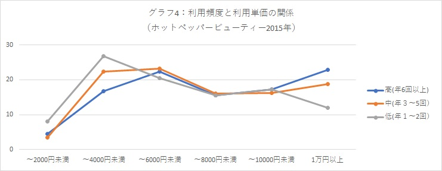
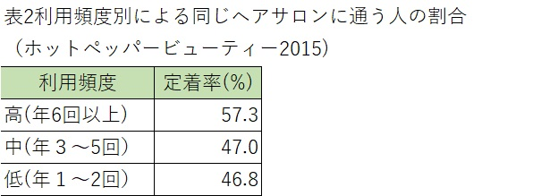

ペルソナ作成までの道のり
サイトの目的
新規顧客の獲得
下記表よりサロンに継続する理由として「自宅から近い」「料金の安さ」の他、「自分のイメージ通りの仕上がり」等のスタッフの技術的な側面がランクインしている為、サイトリニューアルとは別の対策が必要。
よって新規顧客に焦点を当てる。
サイトの目標
新規のお客様がお店に予約する
ケアケア 所沢店の概要
・所沢駅から徒歩0分
・価格は平均より低くリーズナブル（HPBの平均利用金額：7,351円）
カット+カラー+トリートメント￥6980
・顧客に満足できるような様々なサービスがある
・HPBベストサロン賞受賞
ペルソナ作成に当たり
1つの美容室に通い続けているお客様は全体の60%以上(HPB2020年)に上りリピート率が増加すると売り上げの安定につながり、顧客が増えるほどその傾向は高まることから
将来のリピート客になる新規顧客にフォーカスする。
また年間の売り上げに繋がるようペルソナを立てる。
年間の売上
美容室の年間売り上げは下記の式で成り立つ
売上＝年間利用者数Ｘ年間利用回数Ｘ1回の客単価
所沢市について
東京との便が良く、物価も東京より安い事、駅近くにベストサロン賞受賞したお店があることから所沢市に住むお客様に焦点を当てる。また、賞を受賞したお店には一定の客層が定着している美容院であると仮定。
従って転入者に焦点を当てる。
年齢設定(27歳)について
グラフ1より所沢市に転入する年齢層は20歳から39歳に集中しており、最も多い年齢層は25-29歳、その中から中間年齢の27歳とした。
また女性はさらに細分化させ257人と仮定する。
年間利用回数
次に1人の顧客の年間利用回数について。
グラフ2より20代女性の年間利用率は２～3回が約4割を占めている。
しかしながら、年間利用回数を考慮して重み付けをすると、６～11回の年間利用回数における重みが最も大きい
※年間利用における重み⇒年間利用回数における各項目の平均値Ｘ年間利用回数割合
利用頻度と利用単価における関係
グラフ4より利用頻度が高い人ほど利用単価は上がる
定着率について
表２により利用頻度が高い人ほど定着率が高い

以上により『ケアケア 所沢店』の特徴を考えるとターゲットは下記になる
ターゲット：所沢市に転入した利用頻度6回以上の20代女性
またターゲットが定着する理由には「担当が自分の好みや髪のクセを分かってくれている」「担当と話しやすい」「店内の居心地が良い」「自宅からの距離が近い」である。
職業について
さらに利用頻度が多い人は会社員が多い（ホットペッパービューティー2015年）
会社員(事務系）：24.3%、パート・アルバイト：16%、専業主婦：15.5%、会社員（その他）14.5%、学生：12.8%
ケアメニューについて
ターゲットの半数は「カット」「カラー」「トリートメント」が多い
利用頻高(6回以上)における上位5位メニュー（ホットペッパービューティー2020年）
ヘアカット(髪全体）：96.7%、カラー：64%、トリートメント：51.8%、ヘアセット：22.2%、ヘッドスパ：19.3%
これにより下記のペルソナを策定した。
ペルソナ

佐藤愛さん(27)
・女性 会社員
・自分の意志ははっきり伝える性格
・勤務地は東京
・実家(埼玉県中部）から埼玉県所沢市に引っ越してきた(一人暮らし）
・引っ越してきたばかりで通える美容室を探し中
・自宅は駅から徒歩約15分
・最近責任ある仕事を担当。その為、夜遅くまで仕事をしており時間が取れない(20:00～21:00はザラ）
・美容室に通う頻度は多い（年6回以上）
・夜遅くまで営業しているお店が良い（～22:00くらいまで）
・1回の利用で「カット」「カラー」「トリートメント」を利用
・多少の金額を出す事に抵抗はない（1万円以上）
・お店選びの条件
①店内の居心地が良い
②店員が自分の好み・クセを理解してくれる
③店員と話しやすい
④アクセスがし易い（会社帰りに通える）